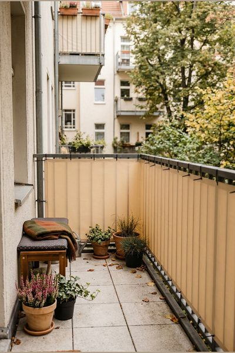
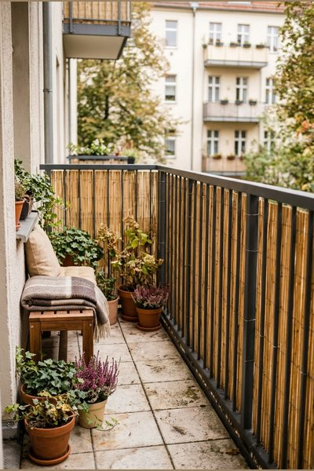
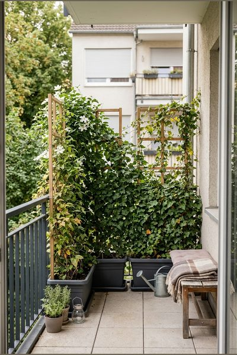

Sichtschutz für den Balkon: Stoff, Bambus oder Pflanzen?
Drei Arten, den Balkon vor Blicken zu schützen – alle ohne Bohren und für Mietwohnungen geeignet. Sie unterscheiden sich vor allem in Preis, Haltbarkeit und darin, wie viel Arbeit sie machen.



1. Stoff-Sichtschutz (Balkonbespannung)
Eine Bahn aus wetterfestem Polyester oder HDPE, die mit Kabelbindern oder einer Kordel innen am Geländer befestigt wird. Gibt es in vielen Farben und meist in 75 oder 90 cm Höhe, als Rolle von 3–6 m.
Vorteile: günstig, in 20 Minuten montiert, blickdicht, hält auch etwas Wind ab.
Nachteile: verblasst nach 2–4 Sommern, flattert bei loser Montage, wirkt schlicht.
ca. 4–8 € pro Meter
2. Bambus- oder Schilfmatte
Natürliche Matten aus Bambus, Schilfrohr oder Weide, mit Draht oder Kabelbindern am Geländer fixiert. Warmes, natürliches Aussehen – passt gut zu Holzmöbeln.
Vorteile: sieht hochwertig aus, kein Plastik, gutes Preis-Leistungs-Verhältnis.
Nachteile: wird grau und brüchig, Schilf hält oft nur 2–3 Jahre; kleine Lücken – nicht ganz blickdicht. Bambus hält länger als Schilf.
ca. 5–15 € pro Meter
3. Grüner Sichtschutz aus Pflanzen
Lange Pflanzkästen am Boden mit einem Rankgitter, an dem Kletterpflanzen über die Brüstung wachsen. Immergrün und schnell: Efeu. Für Sommer mit Blüten: Clematis, Kletterrosen oder einjährige Prunkwinden und Feuerbohnen.
Vorteile: am schönsten, verbessert das Klima auf dem Balkon, kann höher werden als das Geländer.
Nachteile: teurer am Anfang, braucht ein bis zwei Jahre bis dicht (Einjährige: eine Saison), muss gegossen werden; Einjährige sind im Winter weg.
ca. 60–150 € für 2 Kästen mit Gitter und Pflanzen
Vergleich auf einen Blick
| Stoff | Bambus/Schilf | Pflanzen | |
|---|---|---|---|
| Kosten (3 m) | 15–25 € | 15–45 € | 60–150 € |
| Blickdicht | ja | fast | nach 1–2 Jahren |
| Haltbarkeit | 2–4 Jahre | 2–5 Jahre | jahrelang (Stauden) |
| Montage | 20 Min. | 30 Min. | 1–2 Std. |
| Pflege | keine | keine | gießen, schneiden |
| Im Winter | bleibt | bleibt | nur Efeu bleibt grün |
Richtwerte für Deutschland, Stand November 2026. Die Preise schwanken je nach Händler und Saison.
Welcher Sichtschutz passt zu dir?
Schnell und günstig: Stoff. Gut für den Anfang und für Balkone mit viel Wind.
Natürlich, ohne Pflege: Bambus. Lieber Bambus als Schilf nehmen, er hält deutlich länger.
Am schönsten auf Dauer: Pflanzen. Tipp: Im ersten Jahr Stoff hinter das Gitter spannen, bis die Pflanzen dicht sind.
Häufige Fragen
Ist Sichtschutz auf dem Mietbalkon erlaubt?
Meist ja, wenn nichts gebohrt wird und er innen am Geländer hängt. Manche Hausordnungen schreiben eine einheitliche Farbe vor – im Zweifel bei der Hausverwaltung fragen. Nach außen hängende Matten und Werbedrucke sind öfter ein Problem.
Hält Sichtschutz Wind aus?
Ein dichter Sichtschutz fängt Wind wie ein Segel. Darum alle 30–50 cm befestigen, oben und unten. In hohen Stockwerken lieber luftdurchlässiges HDPE-Gewebe statt dichtem PVC nehmen.
Welche Kletterpflanzen wachsen am schnellsten?
Einjährige Prunkwinden und Feuerbohnen erreichen in einem Sommer 2–3 m. Immergrün und winterhart ist Efeu, er braucht aber etwas länger.